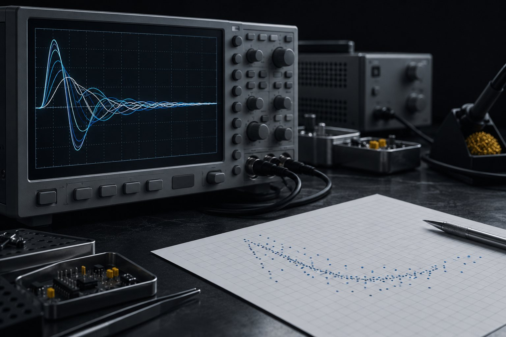

E19 · pass@3 versus pass^3
10 minRun the rehearsal with 25% noise.
Done when: passk.py prints pass@3: 90%, pass^3: 50% and instáveis: t01 t06 t08 t10.
Lesson 7 · 18 min
"Gets 90% right" can mean it gets it right almost every time, or that it gets it right at least once in three tries. For a loop that runs without you, only the first one will do. In this lesson you measure both on your golden set, see how much the number swings between rounds, and learn to read SWE-bench and the METR horizon without overstating them.
Start the lesson
Goal: measure pass@k and pass^k with repetitions, read the variance between rounds, and cite SWE-bench and the METR horizon without overstating them.
Click each step.
For an autonomous loop, report pass^k and the spread between rounds, not pass@k.
The fake triage agent, with TRIAGEM_RUIDO=0.25, gets the "urgente" case wrong in 25% of attempts (fixed draw, reproducible).
E=~/projetos/loop-r-eng-verificacao-v72/kit/evals; mkdir -p /tmp/ensaio-evals TRIAGEM_RUIDO=0.25 python3 $E/rodar-evals.py --agente "python3 $E/agente-triagem-falso.py" \ --k 3 --saida /tmp/ensaio-evals/k3.tsv > /dev/null python3 $E/passk.py /tmp/ensaio-evals/k3.tsv
10 casos × 3 tentativas taxa por tentativa: 73% (rodada 1: 70% · rodada 2: 80% · rodada 3: 70%; desvio 5 pontos) pass@3: 90% (ao menos 1 acerto) pass^3: 50% (acertou todas) se fossem independentes, 73%^3 = 39% instáveis: t01 t06 t08 t10
The same agent can be advertised as "90%" (pass@3) or described as "half the cases always come out right" (pass^3). Round 2 alone would say 80%; rounds 1 and 3, 70%.
pass^3 came out above the independent estimate (39%) because the errors aren't independent: 5 cases never fail and the trap case (t07) always fails. In your own set, the list of unstable cases is the list of cases to study first.
Only what the primary source says, with a date.
METR estimated that about half of the PRs that pass the SWE-bench Verified tests would not be accepted by the project's maintainers.
A green test measures what the test covers. Style, scope, and side effects are left out: that's the space for the skeptical evaluator and the human sample.
There are reports in secondary sources that public code benchmarks leaked into training data and that providers switched benchmarks because of it. We did not confirm the numbers in the primary source.
A practical consequence that doesn't depend on the number: your golden set, private and drawn from your own failures, tells you more about your agent than any public leaderboard.
The 50% horizon = the length of a task (in human expert time) that the model gets right half the time. It is not how long the agent works on its own.
The tasks are in software engineering, ML, and security, well specified and verifiable by code. It doesn't apply to a vague task.
METR's FAQ gives about 2 h 17 min for GPT-5. Claude Mythos Preview (early version, evaluated in March 2026) came in at at least 16 h, with a 95% interval of 8.5 h to 55 h, at the limit of what METR says it can measure.
The time horizons page has been retired: last model added on 05/08/2026, last notice on 09/08/2026. Later models have no official horizon. Use it as an order of magnitude, at 50% success, not 80%.
Uses your subscription quota: 30 calls with the rehearsal set. Afterward, swap in your own set.
python3 $E/rodar-evals.py --agente 'claude -p --tools ""' --k 3 --saida /tmp/ensaio-evals/real-k3.tsv python3 $E/passk.py /tmp/ensaio-evals/real-k3.tsv
armadilha 3/3 bug 15/15 duvida 6/6 pedido 6/6 total 30/30 (100%) → /tmp/ensaio-evals/real-k3.tsv 10 casos × 3 tentativas taxa por tentativa: 100% (rodada 1: 100% · rodada 2: 100% · rodada 3: 100%; desvio 0 pontos) pass@3: 100% (ao menos 1 acerto) pass^3: 100% (acertou todas) se fossem independentes, 100%^3 = 100% instáveis: nenhum
Claude Code 2.1.303, default subscription model, 4 min 20 s. With 10 easy cases, the real agent got all 30 attempts right: this set measures no variance at all. To see pass^k drop, the set needs hard cases (lesson 5). Your number will depend on your set.
Rehearsal, your agent, and one honest sentence.
Run the rehearsal with 25% noise.
Done when: passk.py prints pass@3: 90%, pass^3: 50% and instáveis: t01 t06 t08 t10.
Run your golden set (lesson 5) with --k 3 and your real agent. Write one line in progress.md or in the agent's README with the date, number of cases, pass^3 and the spread between rounds.
Done when: python3 $E/passk.py [seu tsv] prints the lines pass@3:, pass^3: and instáveis:, and grep -c "pass^3" [arquivo onde anotou] → 1 or more.
Question 1 of 4
For a loop that runs unsupervised, which metric matters?skill
Question 2 of 4
With 75% success per attempt, independent, what is pass^3?
Question 3 of 4
According to METR (03/10/2026), what happens to PRs that pass SWE-bench Verified?skill
Question 4 of 4
What does a 50% horizon of 16 h mean?
Pick an option. The explanation appears after you try.